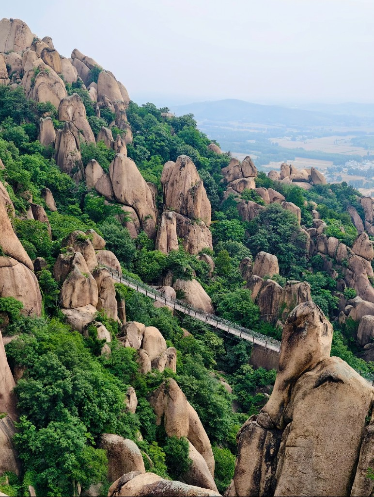

景区介绍
驻马店市嵖岈山旅游景区，位于河南省驻马店市遂平县，南临驻马店市，距武汉市300千米，北靠漯河市，距郑州市180千米。景区总面积148平方千米，主景区面积50平方千米，属于典型花岗岩地质地貌的自然山水景观，有“福地洞天、美景天成、天下奇观”之誉。107国道、京广铁路、石武高铁、京珠高速公路纵贯遂平县境，距景区仅20千米。
驻马店市嵖岈山旅游景区历史可追溯到春秋时代吴楚争霸时期，唐代王仙芝部将尚让曾屯兵于此，清代乾隆皇帝曾三次登临嵖岈山。1958年4月在此成立中国首个人民公社——嵖岈山卫星人民公社，毛泽东曾亲临视察。

1989年景区正式向游客开放。嵖岈山旅游区由南山、北山、花果山、六峰山、天磨湖、琵琶湖、百花湖、秀蜜湖八大景区组成，有九大奇观、九大名峰、九大名洞、九大名棚、九大奇石，现存各类景点300余处，具有“奇、险、奥、幽”四大特点。景区为央视版《西游记》《长征》及多部影视作品主要外景拍摄地。
驻马店市嵖岈山旅游景区2004年获批国家地质公园，2015年晋升国家5A级旅游景区，先后获评国家森林公园、全国首批国家级文明旅游示范单位、全国休闲农业与乡村旅游示范点等13个国家级荣誉，以及河南省首批风景名胜区、旅游度假区等20余项省级荣誉。